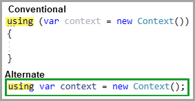

Code snippets are ready-made snippets of code you can quickly insert into your code. For example, the for code snippet creates an empty for loop. Some code snippets are surround-with code snippets, which enable you to select lines of code, and then choose a code snippet which incorporates the selected lines of code. For example, when you select lines of code and then activate the for code snippet, it creates a for loop with those lines of code inside the loop block. Code snippets can make writing program code quicker, easier, and more reliable.
You can insert a code snippet at the cursor location, or insert a surround-with code snippet around the currently selected code. The Code Snippet Inserter is invoked through the Insert Code Snippet or Surround With commands on the IntelliSense menu, or by using the keyboard shortcuts CTRL + K, Y or CTRL + K, S respectively.
For snippets below use CTRL + K + X to activate.
As Karen is teaching there will be several instances that ReSharper will work a tad different than standard Visual Studio. For those who will be working with Visual Studio on a regular basis this extension is a must.
| Name | Description | Locations to insert | Example |
|---|---|---|---|
| #if | Creates a #if directive and a #endif directive. | Anywhere | |
| #region | Creates a #region directive and a #endregion directive. | Anywhere | |
| attribute | Creates a declaration for a class that derives from Attribute. | Inside a namespace (including the global namespace), a classes, or a struct. | |
| class | Creates a class declaration. | Inside a namespace (including the global namespace), a class, or a struct. | |
| ctor | Creates a constructor for the containing class. | Inside a class. | |
| cw | Creates a call to WriteLine. |
Inside a method, an indexer,
a property accessor, or
an event accessor. Note Console.WriteLine is for console projects, to output in other projects use Debug.WriteLine. |
|
| do | Creates a do while loop. | Inside a method, an indexer, a property accessor, or an event accessor . | |
| else | Creates an else block. | Inside a method, an indexer, a property accessor, or an event accessor. | |
| enum | Creates an enum declaration. | Inside a namespace (including the global namespace), a class, or a struct. | |
| for | Creates a for loop. | Inside a method, an indexer, a property accessor, or an event accessor. | |
| forr | Creates a for loop that decrements the loop variable after each iteration. | Inside a method, an indexer, a property accessor, or an event accessor. | |
| if | Creates an if block. | Inside a method, an indexer, a property accessor, or an event accessor. |
Note the ? which we will discuss |
| prop | Creates an auto-implemented property declaration. | Inside a class or a struct. | |
| switch | Creates a switch block. |
Inside a method, an indexer, a property accessor, or an event accessor.
There are many other ways to create a switch as in the following article. |
|
| try | Creates a try-catch block. | Inside a method, an indexer, a property accessor, or an event accessor. | |
| tryf | Creates a try-finally block. | Inside a method, an indexer, a property accessor, or an event accessor. | |
| using | Creates a using statement. | Inside a namespace (including the global namespace). |  |
| while | Creates a while loop. | Inside a method, an indexer, a property accessor, or an event accessor. |